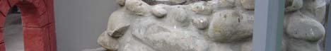

— Tailpiece —
bing's ome

One afternoon I was telling someone with a math background how that little white "house with two rooms" and a sloping red roof — atop that roman aqueduct was, in fact, an example constructed by Bing of a space which is, contractible but not collapsible!
Its glass windows allow us to see that it is peculiar: one enters its rear room via a corridor attached by a flange to the front room, and vice versa! There are no free edges left, we can't collapse it any further. On the other hand, filling the house with sand, and then excavating out the same shows, just as plainly, that the 3-dimensional ball, which of course is collapsible, collapses also to Bing's house!
Bing's house with two rooms
A simplified reconstruction of Bing's famous example. The coloured tubes are the two corridors — each one enters a room from the side opposite its own entrance.
At this point I realized that I had not one, but three listeners, and that I had been talking above the heads, in more ways than one, of the other two! Two small girls, a precocious child of about ten, and her equally bright-eyed younger sister, who was probably still too young to go with us (they and their parents were amongst a number of guests we had over for tea that day). To make amends, I switched to my story about that chotta aadmi (small man) who had, as a matter of fact, made this fully-functional paani ki taanki (overhead water tank), as well as this roman aqueduct with its thirteen (true) arches, all by himself, and who was, to tell the truth, still pretty much running the whole show, more or less ...
There was an indulgent and bemused look on the older child's face as I spun this yarn, but her little sister was impressed! She asked, "So he lives in the house with two rooms, uncle?" "No, beta," I replied, "that's the pump-house. He lives, like all elves do, far far underground. That little cave in the wall, from where that tiny road comes out to that ramp leading to the spiral stair-case winding around and up this taanki, and finally, that arch bridge to the aqueduct, I would suspect that that's his route to and from work, but like most humans I can't see elves, so I'm not sure."
A one-sided surface
My companion already knew a simple method for making this one-sided surface — take a strip of paper, twist one end through 180 degrees, and glue to the other — there was nothing much I had to say about it. Drag to rotate.
On our way out, we paused at the spot from where the sound of running water is transmitted via the metallic frame to the rear of the chabutra, to ponder the patterns made by fast-flowing water from the fall, over the pebbles of that gorge, as it about-turns into a subterranean tunnel and pool which feed the stony brook.
It was about then that my companion told me, "That method of yours does not really give me a möbius strip of paper, indeed it can never be made, for, the material making it would prescribe an inner side, while we want a one-sided surface!" Now this is serious, not only am I faulting another method, it seems I didn't come clean on mine either, but my companion saw the point I was trying to get across. Neither the concrete statue, nor the most delicate of models in the thinnest of papers shall give a möbius strip, for the simple reason that, it is an abstract idea: it exists in our imagination only: there alone is to be found that ethereal paper with zero thickness, the gossamer necessary to 'make' any mathematical surface.
So, the "house with two rooms" atop the aqueduct, that too is not mathematician R. H. Bing's example either, only an evocation of the same, and so on down the line, for all the motifs. They are all flawed depictions of flawless forms that can't be seen as such — "like elves," my companion teased me — but the fact that these imperfect depictions are so efficient in evoking in our minds these precise ideas, suggests that these 'elves of mathematics' are somewhat more important and natural, and in fact, most of these logical constructs arose historically from a contemplation of the patterns of nature.
Conversation over tea that day had flowed smoothly on everything under the sun, but both were waning now, yet the older sister was chattering away with the grown-ups, but her sibling had left the skew room long ago. Fearing that she might be too near the water-pond in this fading light, I was relieved to find her by the aqueduct, but was taken aback by her posture: half-kneeling and stockstill, she was sort of squinting, steadily and fixedly, into that little cave! Setting myself down slowly on the grass besides her, I asked, "What is it, beta, what are you looking at?" Her voice was soft, but the two words were clear enough, and made my eyes dart to the "house with two rooms," but it was not that, it was this cave only that was holding all her attention, as she repeated, "bing's ome," and moved a finger slowly towards it.
The thought flashed that she was pulling my leg in return, but there was not a trace of naughtiness on that innocent face, and the thought was dismissed; as I looked at exactly where she was looking, but I saw only what you see in the photo above (which however was taken on a later day, in better light). While she remained in that fascinated state for about thirty seconds more, when, all of a sudden, her body relaxed and returned to normal, and it was clear that whatever she had seen, or thought she had seen, was no longer there. The happy smile the child smiled at me then presumed that I had also seen what she had seen, so I only smiled back. However later, on many evenings at about the same time, I have sat down on the same grass at the same place, and tried many contortions of face and squintings of eyes, hoping to espy, for myself, that elf which that little girl had apparently seen, but I would be lying if I were to tell you that I have seen it too, for I haven't, not yet, anyways!
I remember reading that, try as they might, a small but significant percentage of people can't see the hidden image in even the simplest of those "Magic Eye" pictures, so who knows, bing with a small 'bee' might be somewhere in the previous photograph, only you aren't squinting at it properly? More seriously, I hope you managed to catch at least a glimpse of the shimmering beauty of the elves of mathematics, which indeed I have seen, and which I've tried to share with you, via these motifs, in this paper.

213, 16A,
Chandigarh 160015, INDIA.